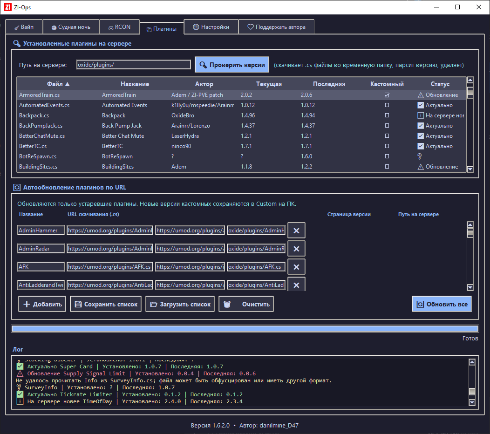

Новая карта, новый старт
Удаление заданных файлов, очистка папок и подготовка server.cfg с новым seed и размером карты. Перед запуском — список действий и полные пути.
ДЛЯ СЕРВЕРОВ RUST
Вайп, плагины и команды сервера — в одном окне. ZI-Ops помогает с повседневным управлением, чтобы меньше времени уходило на ручную работу.

О ПРОГРАММЕ
Подключите нужные сервисы в настройках и работайте со своим сервером через понятные вкладки.
Удаление заданных файлов, очистка папок и подготовка server.cfg с новым seed и размером карты. Перед запуском — список действий и полные пути.
Сравнение версий и обновление только устаревших плагинов. Новые исходники кастомных плагинов сохраняются в Custom для переноса ваших патчей.
Быстрые команды, ручной ввод с подсказками и ответы в консоли. Query показывает публичный статус и обновляется, пока открыта вкладка RCON.
Выберите файлы для начала и конца ночи. Программа меняет только указанные пути и сохраняет резервные копии затрагиваемых серверных файлов.
Адреса и порты FTP, RCON и Query берутся из панели хостинга. Для генерации карт нужен ваш RustMaps API Key.
ПЛАНЫ РАЗВИТИЯ
Дальнейшая работа — над совместимостью, удобством и надёжностью программы.
Подготовить версию ZI-Ops для Linux, чтобы пользоваться программой можно было и на этой системе. Сейчас готовая сборка доступна для Windows.
Исправлять найденные баги и учитывать сообщения пользователей о проблемах в работе программы.
Улучшать отзывчивость интерфейса во время длительных операций и сетевых запросов.
Дорабатывать подключения и файловые операции, уменьшать задержки и улучшать обработку ошибок.
Это планы дальнейшей разработки. Сроки выпуска пока не определены.
ВЕРСИИ
Выберите выпуск, посмотрите изменения и скачайте готовую программу для Windows.
Получаем список версий…
Кастомные плагины скачиваются в отдельную папку Custom для доработки, без автоматической замены на сервере.
Скачать EXE ↓ZI-OPS ДЛЯ WINDOWS
Скачайте программу, настройте подключения и начните с нужной вкладки.